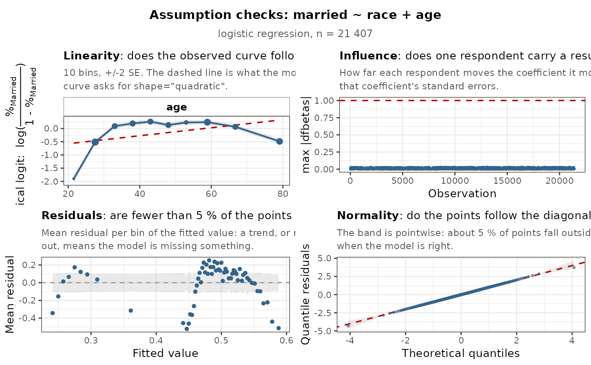

A teaching companion, not a decision tool. Every verdict these panels illustrate is already a
row in the table's own footer, for every model column, with no plotting package installed (see the
stats argument of tab_reg()). This function exists to show what a violation looks like.
One call diagnoses every model in the table: one titled grid per model, drawing the panels its own
family allows. Pass a tab_reg() table — the data it was built from is usually found on its own
— or a fitted model directly.
Usage
reg_check_plots(
x,
data = NULL,
check = "auto",
predictors = NULL,
ncol = NULL,
facet_ncol = NULL,
theme = NULL,
lang = NULL,
max_points = 2000L,
nbins = 10L,
conf = 0.95,
seed = 20260810,
...
)Arguments
- x
A
tab_reg()table, or a fitted model (lm/glm/svyglm/polr/multinom/svyolr).- data
The data frame or
survey::svydesignthe table was built from. Usually unnecessary: a table records the name it was called with, and when that name still holds data of the same size, it is used — otherwise the call stops rather than draw the wrong model. Givedataexplicitly when the table was built from an expression rather than a named object (tab_reg(gss |> dplyr::filter(...), ...)), or when the name has since changed. Ignored with a bare model.- check
Which panels to draw.
"auto"(default) draws the panels that decide something the footer cannot say in one number — linearity, residuals, normality, influence, and proportionality for an ordinal outcome."all"adds dispersion and collinearity, whose footer row is normally enough. Or name them: any of"linearity","residuals","normality","dispersion","influence","collinearity","proportionality"— the same words the footer rows andtab_reg()'sstatsargument use.- predictors
Optional: restrict the linearity panel to these continuous predictors.
- ncol
Number of panel columns in the assembled grid (default: as square as it can be, 3 at most).
- facet_ncol
Number of facet columns inside a panel (default: 2 for linearity, 4 for proportionality).
- theme
"light","dark", or a black-and-white publication palette ("print_ready"and friends). Defaults tooptions("tabxplor.theme"), like the table exporters.- lang
Language of the titles and captions (
"en","fr", ...). Defaults tooptions("tabxplor.lang").- max_points
Thin the raw-point layers to about this many observations; statistics and verdicts are always computed on the full data.
- nbins
Bins of the linearity panel's observed curve (default 10).
- conf
Confidence level of the Q-Q band. Default
0.95.- seed
Seed of the randomised quantile residuals (
NULLfor a fresh draw each time).- ...
Unused, for future extension.
Value
Invisibly, the assembled gtable — or, with several models, the named list of them, one
per model, all drawn on the current graphics device.
See also
tab_reg() and its stats argument (the same checks as footer rows), and
forest_plot() for the RESULTS – its opposite contract: it reads the finished table and never
re-fits, where a model check always must.
Examples
# \donttest: building a multi-panel ggplot grid costs a few seconds of CPU.
# \donttest{
d <- forcats::gss_cat |>
dplyr::mutate(married = factor(dplyr::if_else(marital == "Married",
"Married", "Not married")))
if (requireNamespace("ggplot2", quietly = TRUE) &&
requireNamespace("gridExtra", quietly = TRUE)) {
t <- tab_reg(d, "married", c("race", "age"), family = "binomial")
reg_check_plots(t)
}

# }